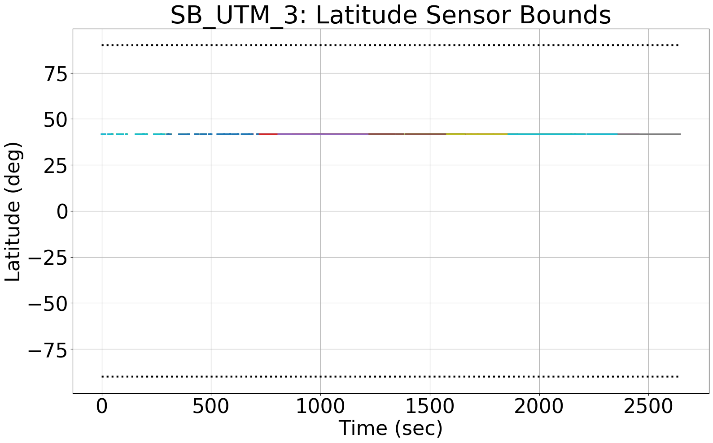
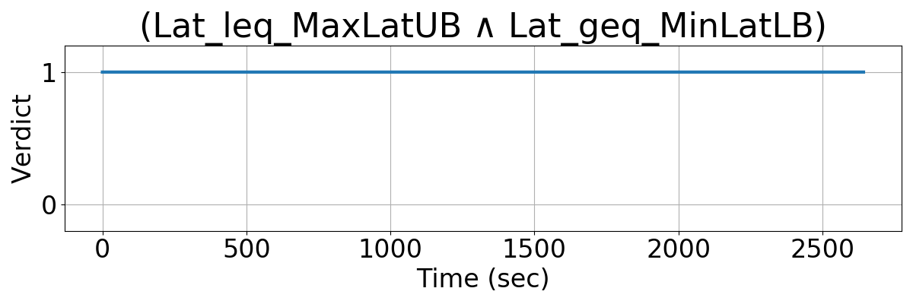
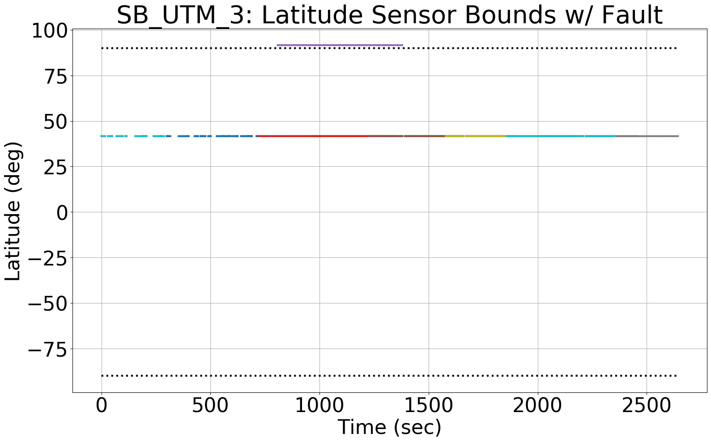
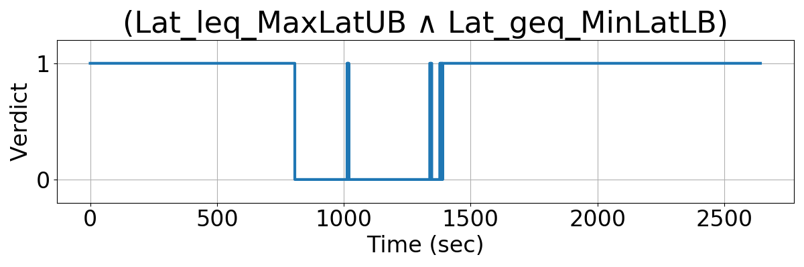
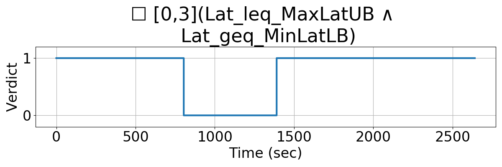

Integrating Runtime Verification into an
Automated UAS Traffic Management System
Matthew Cauwels, Abigail Hammer, Benjamin Hertz, Phillip H. Jones, Kristin Y. Rozier
This webpage contains supplementary specifications for "Integrating Runtime Verification into an
Automated UAS Traffic Management System" by M. Cauwels, A. Hammer, B. Hertz, P. H. Jones, and K. Y. Rozier
SB_UTM_3
Specification Description
The latitude (Lat) of any UAS's telemetry data will be bounded between MaxLatLB and MinLatUB.
Signals Required
Lat
Boolean Conversion of Signals to Atomic Inputs
Lat_leq_MaxLatUB = 1;
for(i = 0; i < NumUAS; i++)
{
// if UAS i's Lat is greater than the upper bounded
// and the value is not "nan"
if((Lat[i] > MaxLatUB) && (Lat[i] == Lat[i])
{
Lat_leq_MaxLatUB = 0;
}
} Lat_geq_MinLatLB = 1;
for(i = 0; i < NumUAS; i++)
{
// if UAS i's Lat is less than the lower bounded
// and the value is not "nan"
if((Lat[i] < MinLatLB) && (Lat[i] == Lat[i])
{
Lat_geq_MinLatLB = 0;
}
} MLTL Specification
Original: (Lat_leq_MaxLatUB ∧ Lat_geq_MinLatLB)
Updated: ☐[0,M] (Lat_leq_MaxLatUB ∧ Lat_geq_MinLatLB)
Fault Explanation
A UAS's latitude measurement is not physically possible.
Additional Notes
Latitude can only ever by between -90 and 90 degrees. Anything outside these bounds is nonsensical and indicates a fault within the system.
Figures




